Epoque Badarienne
Epoque Amratienne
Epoque Gerzéenne
-3200 : Apparition de l'écriture en égypte
Dynastie 0
Le roi Scorpion
Narmer
Devient roi de Haute-Egypte.
Conquête du Delta, et unification de la haute et basse Egypte.
Fondation de Memphis
Première pyramide (à degrés) à Saqqarah.
Conquête du Sinaï
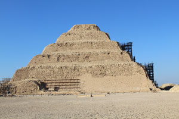
-2585 : Mort de Snefrou, son fils Kheops lui succède
Pyramide à guizeh
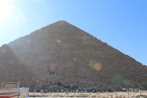
Avènement de kephren, fils de Kheops
Pyramide à Guizeh
-2532 Mort de khephren, son fils Mykerinos lui succède
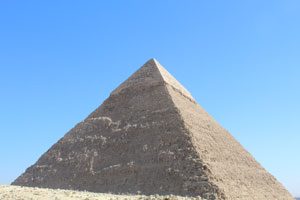
Pyramide à Guizeh
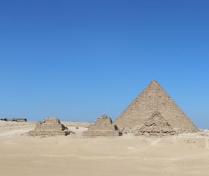
Pyramide à Guizeh
Apparition du texte des pyramides à Saqqarah
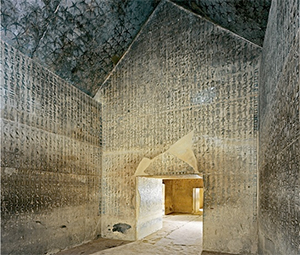
Conquête de la Nubie
Montouhotep renverse la Xeme dynastie et réunifie l'Egypte
Temple à Deir el Bahari
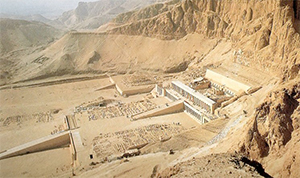
Réunification de la Haute et Basse Egypte
Transfert de la capitale à Itshtaouy
construction du "mur du prince" contre les bédouins.
Il assoscie son fils Seostris au pouvoir qui devient corégent
Expédition en Basse Nubie
Il assoscie son fils Amenemhat au pouvoir qui devient corégent
Construction de son tombeau et et d'un temple à Dashour
Il associe son fils Sesostris au pouvoir qui devient corégent
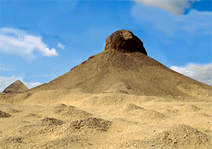
Renforcement du réseau de forteresse egyptiennes en Basse nubie
Assèchement des marais du Fayoum
Campagne de pacification en Nubie
Intégration de la nubie à l'Egypte
Prise de Sichem par Sesostri III
Construction d'une pyramide à Dashour (Saqqarah) et à Hawara (Fayoum)
Il associe au pouvoir son neveu Amenemhat
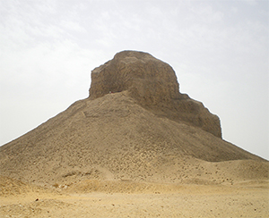
-1543 Mort du pharaon lors d'un combat contre les Hyskos
Ahmosi sache les hyskos hors d'Egypte
Régence de la reine ahmès Nefertari pour son fils Aménhothep
Conquête de la nubie
Thoutmosis II épouse Hatchepsout, sa demi-soeur.
-1479 mort de Thoutmosis II, son fils est nommé pour lui succéder sous la régence de sa mère.
-1472 Hatchepsout prend les titres phraoniques.
-1470 Expédition égyptionnes contre le pays de pount (Soudan)
Construction du temple de Deir-el-Bahari.
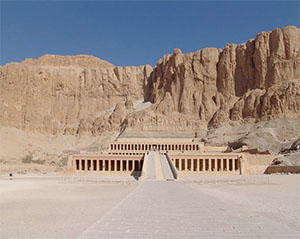
Conquête de de la phénicie, de la palestine et de la syrie.
-1437 - 1436 Thoutmosis III fait supprimer les représentations d'Hatchepsoout.
Construction du temple de louxor
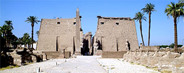
Instauration du culte d'Aton (dieu unique
Création de tel-el-Amarna qui devient la capitale de l'Egypte)
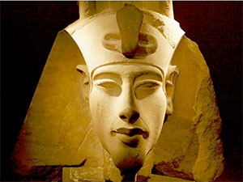
Restauration du culte d'amon, thèbes redevient capitale)
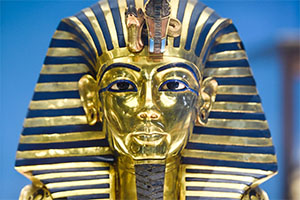
-1279 Mort de Sethi Ier, son fils ramsès lui succède
-1274 victoire de ramses II devant Kadesh, citadelle hittite.
-1255 inauguration des temples d'Abou Simbel.
-1250 Départ des Hebreux d'Egypte sous la conduite de Moise
-1213 mort de Ramses II, son fils Merenptah lui succède.
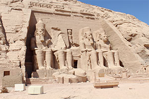
Ramses repousse les assauts des peuples de la mr
-927prise de Jérusalem par Chechonq Ier
-671 Assaraddon, roi d'Assyrie, s'empare du Delta et de Memphis
-671 Assourbanipal, roi d'Assyrie, s'empare de Mempis et de l'Egypte
-651 Psammétiquea chasse les Assyriens d'Egypte
-609 Nekao II tue josias, roi de judée à Meggido et s'empare du royaume.
-605 défaite de Nekao II à Karkemish face à Nabuchodonosor, roi de babylone qi s'empre d royaume de Judée
-525 conquête de l'Egypte par Cambyse II, roi de Perse.
-462 Révolte d'Inaros contre les Perses.
-460 Athènes envoie une armée pour soutenir la révolte conre les Perses.
-454 L'armée Athénienne est anéantie.